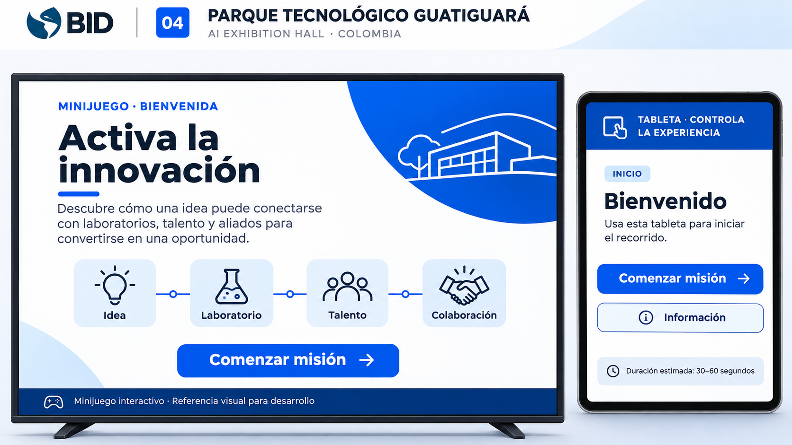
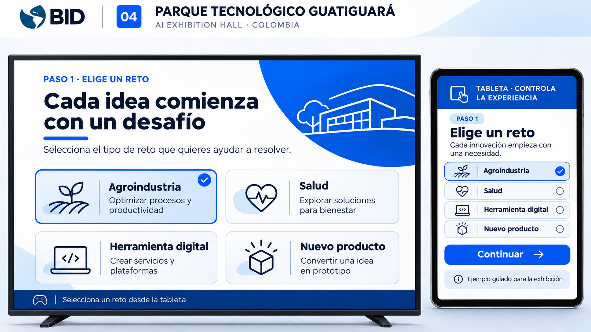
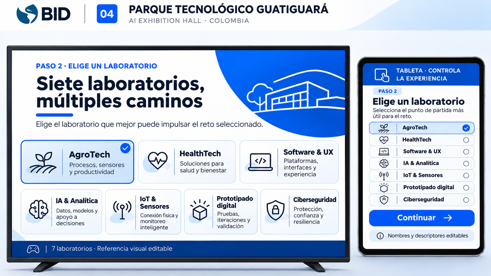

Las imágenes son guía para implementar los componentes interactivos en el proyecto existente. No deben utilizarse como pantallas planas ni como fuente de logos oficiales. Los siete nombres de laboratorio deben validarse.
Español

01 · Bienvenida — 01_Bienvenida_ES.png

02 · Selección de reto — 02_Elegir_Reto_ES.png

03 · Siete laboratorios — 03_Siete_Laboratorios_ES.png